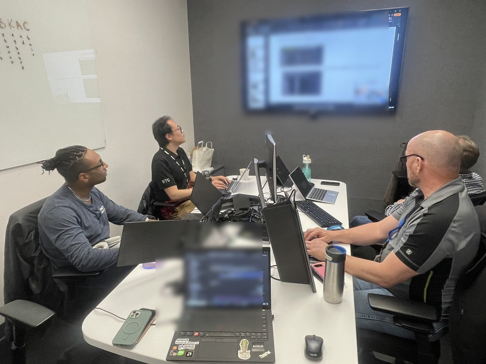

AMD Instinct · GPU / HBM readiness
Bring-up, debug, and cross-functional recovery
Led program execution around GPU validation and HBM readiness across silicon, firmware, software, platform, suppliers, and validation teams. Daily technical operating rhythms helped turn fast-changing failure data into ownership, escalation, and closure.
Outcome: 20%+ faster issue / debug cycles, stronger validation tracking adoption, and better automation-data quality.